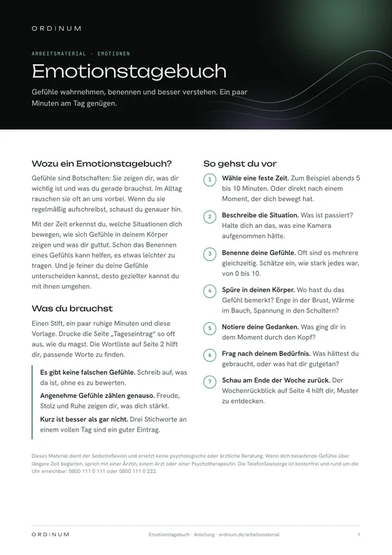
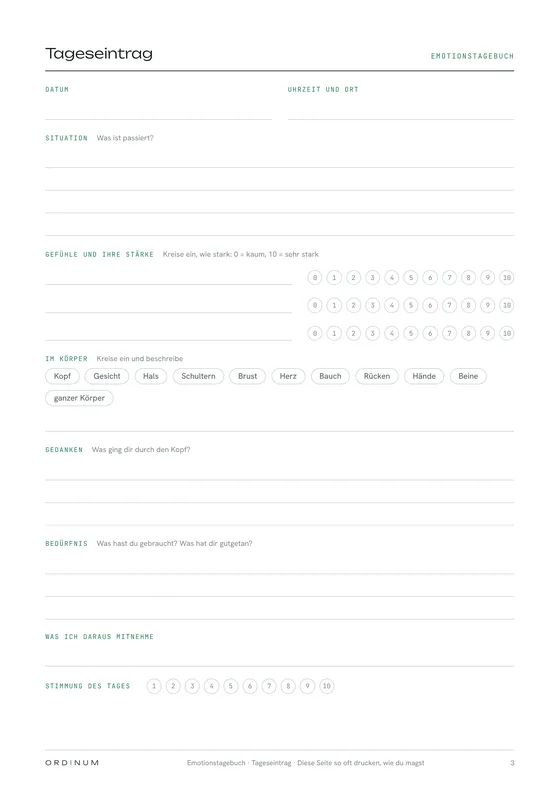
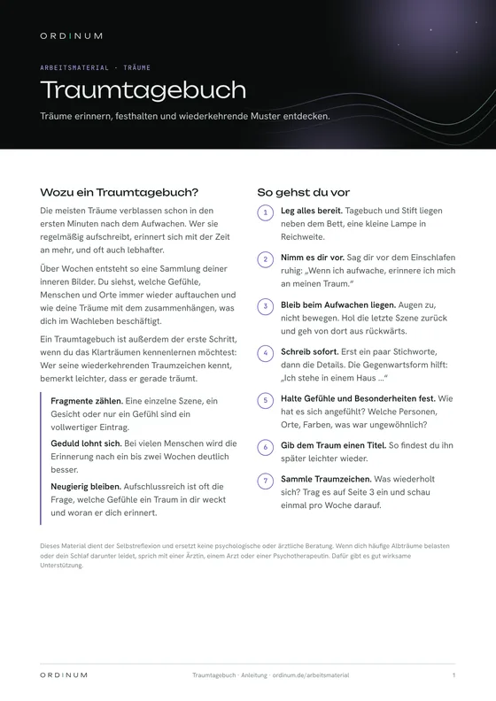
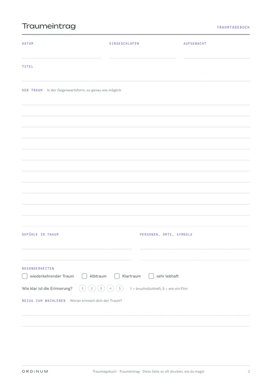
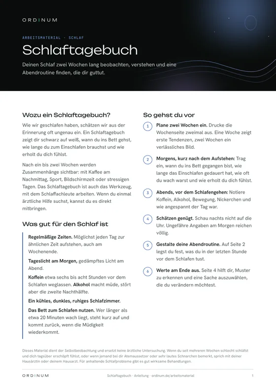
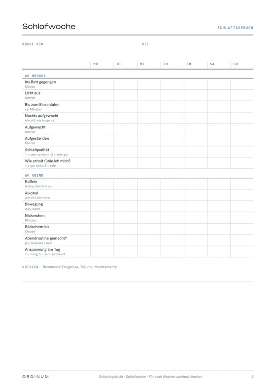
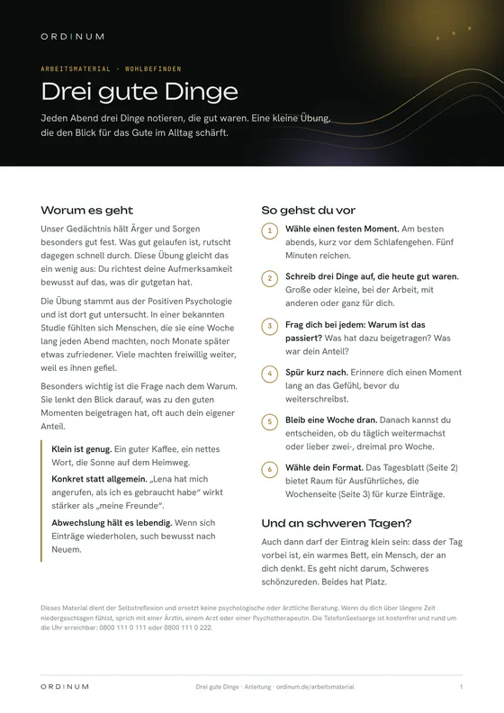
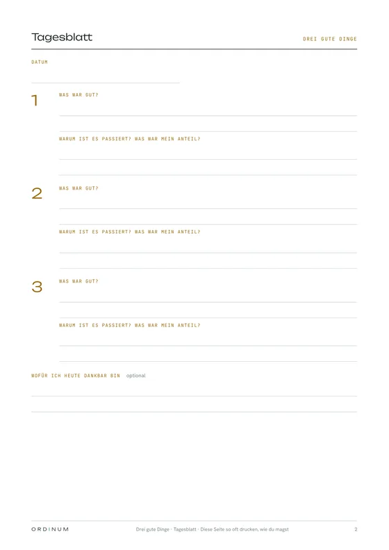

Arbeitsmaterial
Vorlagen für mehr Selbstverstehen im Alltag
Tagebücher und Arbeitsblätter zum Ausdrucken, jeweils mit einer kurzen Anleitung. Für ein paar ruhige Minuten mit dir selbst.


Emotionen
Emotionstagebuch
Gefühle wahrnehmen, benennen und besser verstehen. Mit der Zeit erkennst du, welche Situationen dich bewegen, wie sich Gefühle in deinem Körper zeigen und was dir guttut.
- Anleitung
- Gefühlswörter
- Tageseintrag
- Wochenrückblick
So funktioniert es
- Feste Zeit wählen: abends 5 bis 10 Minuten, oder direkt nach einem Moment, der dich bewegt hat.
- Situation und Gefühle notieren: Was ist passiert, was hast du gefühlt und wie stark? Die Wortliste hilft beim Benennen.
- In den Körper spüren: Wo hast du das Gefühl bemerkt, und welche Gedanken waren dabei?
- Nach dem Bedürfnis fragen: Was hättest du gebraucht, was hat dir gutgetan?
- Wöchentlich zurückschauen: Der Wochenrückblick zeigt dir wiederkehrende Muster.


Träume
Traumtagebuch
Träume erinnern, festhalten und wiederkehrende Muster entdecken. Wer regelmäßig aufschreibt, erinnert sich mit der Zeit an mehr. Ein guter erster Schritt, wenn du das Klarträumen kennenlernen möchtest.
- Anleitung
- Traumeintrag
- Traumzeichen-Sammlung
So funktioniert es
- Vorbereiten: Tagebuch und Stift neben das Bett legen und dir vor dem Einschlafen vornehmen, dich zu erinnern.
- Liegen bleiben: Beim Aufwachen die Augen geschlossen halten und den Traum von der letzten Szene aus zurückholen.
- Sofort aufschreiben: erst Stichworte, dann Details, am besten in der Gegenwartsform. Auch Fragmente zählen.
- Gefühle und Titel ergänzen: Wie hat es sich angefühlt, was war ungewöhnlich? Ein Titel macht den Traum wiederauffindbar.
- Traumzeichen sammeln: Was sich wiederholt, trägst du in die Traumzeichen-Liste ein.


Schlaf
Schlaftagebuch mit Abendroutine
Zwei Wochen lang beobachten, wie du schläfst und was deinen Schlaf beeinflusst. Dazu gestaltest du eine Abendroutine, die dir hilft, zur Ruhe zu kommen.
- Anleitung
- Abendroutine
- Schlafwoche
- Auswertung
So funktioniert es
- Zwei Wochen einplanen: Die Wochenseite zweimal ausdrucken.
- Morgens eintragen: Zubettgehzeit, Einschlafdauer, nächtliches Aufwachen, Aufstehzeit und wie erholt du dich fühlst.
- Abends ergänzen: Koffein, Alkohol, Bewegung, Nickerchen, Bildschirmzeit und Anspannung des Tages.
- Abendroutine festlegen: Was du in der letzten Stunde vor dem Schlafen tust, mit Ideen zum Auswählen.
- Auswerten: Was unterscheidet gute von schwierigen Nächten? Eine Sache auswählen, die du verändern möchtest.


Wohlbefinden
Drei gute Dinge
Jeden Abend drei Dinge aufschreiben, die gut waren, und warum sie passiert sind. Eine kurze, gut untersuchte Übung aus der Positiven Psychologie, die den Blick für das Gute im Alltag schärft.
- Anleitung
- Tagesblatt
- Wochenseite
So funktioniert es
- Festen Moment wählen: abends, kurz vor dem Schlafengehen. Fünf Minuten reichen.
- Drei gute Dinge notieren: große oder kleine, konkret statt allgemein.
- Nach dem Warum fragen: Was hat dazu beigetragen, was war dein Anteil?
- Kurz nachspüren: Einen Moment beim guten Gefühl bleiben.
- Eine Woche dranbleiben: Danach entscheidest du, wie oft du weitermachst.
Ein paar Tipps für den Anfang
- Die Eintragsseiten kannst du so oft ausdrucken, wie du magst. Gelocht und abgeheftet entsteht dein eigenes Tagebuch.
- Regelmäßigkeit bringt mehr als Ausführlichkeit. Ein kurzer Eintrag an vielen Tagen zeigt dir mehr als ein langer einmal im Monat.
- Schreib für dich. Niemand muss deine Einträge lesen, und es gibt kein Richtig oder Falsch.
Du möchtest wissen, welche Stärken und Eigenschaften dich ausmachen? Die Tests von Ordinum sind kostenlos und ohne Konto.
Zu den TestsDie Materialien dienen der Selbstreflexion und ersetzen keine psychologische oder ärztliche Beratung. Wenn dich belastende Gefühle, häufige Albträume oder Schlafprobleme über längere Zeit begleiten, sprich mit einer Ärztin, einem Arzt oder einer Psychotherapeutin. Die TelefonSeelsorge ist kostenfrei und rund um die Uhr erreichbar: 0800 111 0 111.